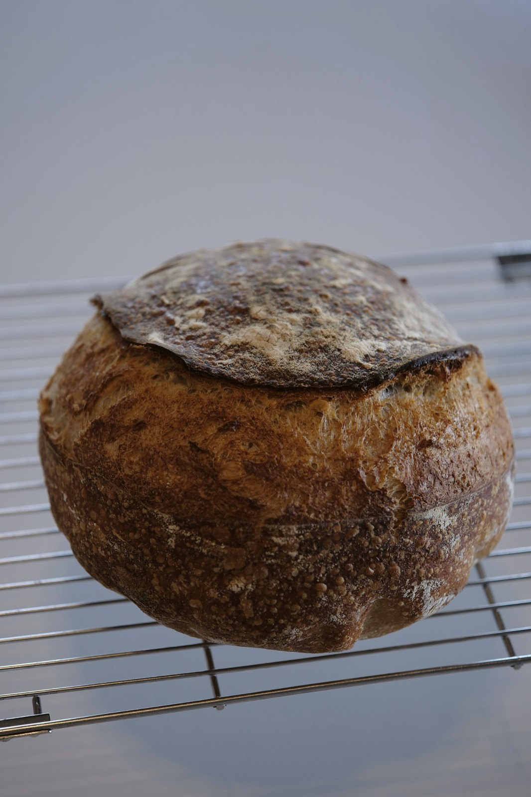

grain of tasterecipesnew every week
recipes
Every recipe I bake at home, written so it works in yours: grams for two loaf sizes, a video for every step, and what to watch instead of the clock. The newest one is always on top.
1recipe · every week

latest recipe
no. 02 · 1 nov 2026
rye tin loaf
Rye starter, a big tin, no shaping skills. About 20 minutes of your hands.
open the recipe
latest recipe
no. 01 · 25 oct 2026
wheat sourdough
White + 25% whole wheat on stiff starter. Six steps, six videos, one overnight.
open the recipestarterswhere every loaf begins